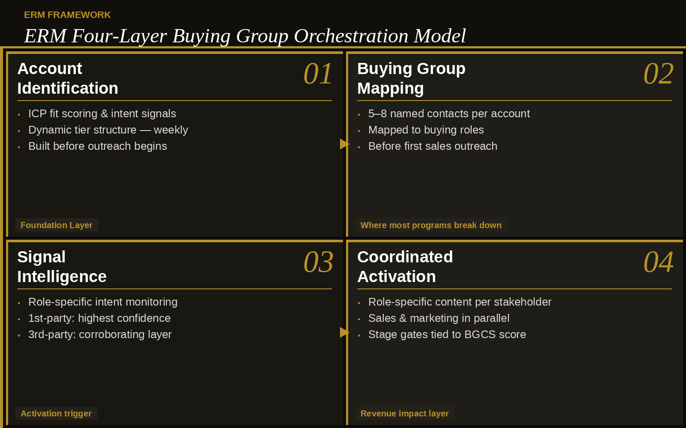
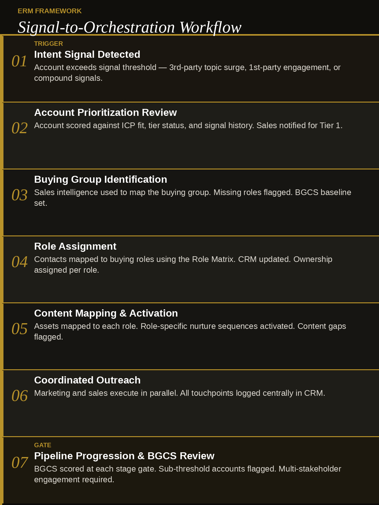
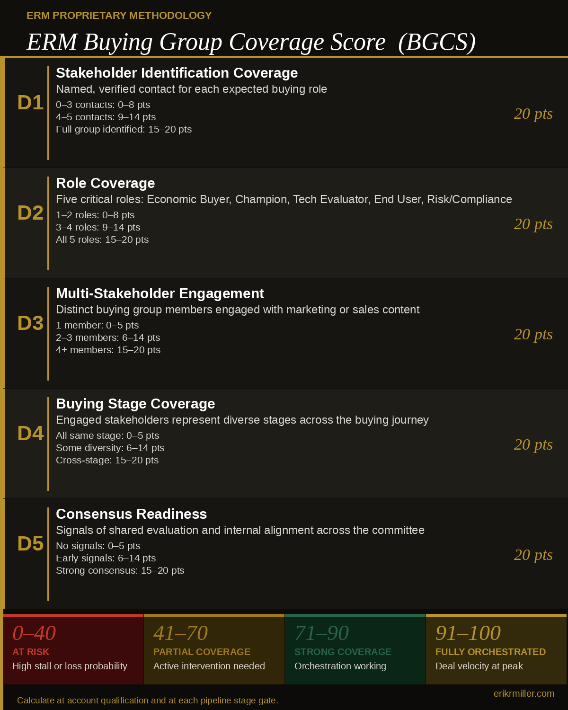

If your champion left tomorrow, would the deal survive? Think about your most important pipeline account right now. The champion is engaged. Meetings are happening. The proposal is out.
Then that contact changes roles. Leaves the company.
And everything stalls. Not because the solution was wrong. Because the buying group never actually existed as far as your program was concerned. You built a relationship with one person inside an organization that makes purchase decisions collectively. When that person stepped away, there was no committee left.
This is the buying group gap. And it is where most enterprise ABM programs quietly bleed revenue.
Buying group orchestration is the discipline of identifying every key stakeholder in a B2B purchase decision, mapping their roles and information needs, monitoring intent signals at the individual level, and coordinating marketing and sales engagement across the full committee. Not just the champion.
Most ABM programs target the account. The best ones orchestrate the humans inside it.
— Erik R. MillerPart III of the ERM ABM Strategy Series. Start with The Hidden ABM Problem and Why Most ABM Programs Fail for the foundational diagnosis.
Buying Group Orchestration vs. Traditional ABM
The distinction between the two approaches determines whether an ABM program produces pipeline or produces activity reports.
The Research Case
The buying group gap is a documented revenue problem, not a theoretical one. Three authoritative sources converge on the same finding.
The typical buying group for a complex B2B solution involves 6 to 10 stakeholders, each gathering 4 to 5 pieces of independent information they rarely share with the rest of the group. ABM programs that reach only one or two members are engaging a fraction of the collective decision.
The average B2B purchase involves 13 stakeholders, with 89% of decisions crossing multiple departments. Forrester identifies buying consensus as the primary driver of deal completion, not individual champion conviction.
Buyers complete a significant portion of their evaluation before engaging any vendor. Buying groups conduct multi-stakeholder research in the dark funnel, outside the visibility of traditional marketing attribution, long before any hand-raise occurs. By the time a champion surfaces, the committee has often already formed preliminary vendor preferences.
These findings converge on a practical implication: buying committee engagement (reaching every relevant stakeholder before a decision is made) is the operational gap between ABM programs that generate pipeline and those that generate reports.
“An account is a target. A buying group is the decision-making reality inside that target. ABM that confuses the two is running expensive prospecting with account-based branding on top.”
What Good Looks Like: An Implementation Scenario
The following scenario illustrates how the Four-Layer Model operates in practice, with BGCS tracked at each stage.
Enterprise SaaS Account — Mid-Market Financial Services
Intent data shows a target account surging on CRM integration topics. One marketing ops contact visited the pricing page twice in five days. Account enters active consideration.
BGCS: 18 / At Risk — one contact, no roles mapped.
Sales intelligence surfaces seven likely members: VP RevOps (champion), CFO (economic buyer), Director of Sales Technology (technical evaluator), two sales managers, a procurement contact, and a data privacy officer.
BGCS: 34 / Partial — group identified, no engagement yet.
Marketing activates role-specific tracks simultaneously: executive ROI briefing to the CFO, technical integration series to the Director, user adoption content to the managers, competitive intelligence and internal selling tools to the champion. Sales initiates direct outreach to the CFO and technical director.
BGCS: 58 / Partial — 4 of 7 engaged.
The data privacy officer downloads the security overview, signaling compliance review has begun. Sales proactively delivers a pre-complete security questionnaire. Procurement is introduced to vendor onboarding before the deal reaches selection. Both potential blockers converted to informed participants.
BGCS: 74 / Strong
Deal advances to selection stage at week 10 vs. a 14-week average. Five of seven buying group members actively engaged, compliance and procurement running in parallel.
BGCS at close: 88 / Strong Coverage
Cycle time cut by 29%, demonstrating the pipeline velocity gains from full committee coverage. This is the B2B sales cycle optimization that orchestration consistently produces. No last-minute compliance or procurement blockers. Champion departure risk eliminated. The deal belonged to the committee, not the individual.
The Four-Layer Orchestration Model ERM Framework
Effective orchestration operates across four sequential layers. Each must be functional before the next can deliver full value. Most programs that struggle have gaps in Layers 2 and 3. Technology is rarely the constraint. Incomplete process and definition work almost always is.
Why Layer Order Matters in Multi-Stakeholder ABM
The sequencing is not arbitrary. Account Identification without Buying Group Mapping produces well-targeted single-threaded campaigns, which is the most common failure mode in multi-stakeholder ABM. Signal Intelligence without Coordinated Activation produces great data that goes nowhere. Each layer unlocks the one above it. Teams that try to skip to Coordinated Activation without the mapping and signal infrastructure in place will run disconnected campaigns at scale.

ERM Four-Layer Buying Group Orchestration Model — erikrmiller.com
A dynamic target account list driven by ICP fit scoring, first-party behavioral data, and third-party intent. A living tier structure, reviewed weekly rather than built once per quarter.
→ AI-Powered ICP DevelopmentIdentify 5–8 named contacts mapped to buying roles for each active account. Use sales intelligence and closed-won deal analysis to build the group hypothesis before the first outreach.
The layer where most programs break downMonitor role-specific intent and behavioral signals. Intent data (third-party signals that surface which topics and vendors an account is actively researching) is most valuable as a corroborating layer alongside first-party signals, not as a standalone activation trigger. First-party signals remain highest confidence.
→ Signal-Centric ABM ModelRole-specific, coordinated marketing and sales engagement across the full committee simultaneously. Orchestration fails when marketing and sales run parallel, disconnected campaigns.
Where orchestration produces revenue impactThe Buying Group Role Matrix ERM Framework
Every enterprise buying group contains the same cast of characters, even when titles change. Use this matrix to audit your content library against actual committee composition, then close the gaps before the next campaign.
The Buying Committee Engagement Gap
Buying committee engagement fails most predictably in two places: the Economic Buyer, who approves budget but is rarely contacted before the final 20% of the deal cycle, and Risk & Compliance, who can block a closed deal in the final week if never engaged earlier. Auditing your content library against this matrix will reveal which roles have no dedicated assets. That gap is where deals slow down.
| Role | Primary Concern | Content Needed | Engagement Owner | Buying Stage |
|---|---|---|---|---|
| Economic Buyer | ROI, strategic fit, budget efficiency, business risk | Executive briefings, ROI calculators, business case frameworks | Sales (Senior) + Exec Sponsor | EvaluationSelection |
| Executive Sponsor | Strategic alignment, organizational impact, vendor credibility | Vision papers, analyst recognition, executive case studies | Sales Leadership + Marketing | AwarenessConsensus |
| Business Champion | Solving the problem, internal political success | Use cases, success stories, internal selling enablement tools | Sales (primary) + Marketing (support) | All Stages |
| Technical Evaluator | Integration complexity, security, scalability, implementation risk | Architecture guides, security docs, API docs, integration case studies | Sales Engineering + Technical Mktg | ValidationEvaluation |
| Procurement | Commercial terms, vendor risk, compliance posture | Vendor assessment frameworks, reference accounts, standard terms | Sales (commercial) + Legal | SelectionNegotiation |
| Risk & Compliance | Data security, regulatory compliance, contractual liability | SOC 2, security certifications, data handling policies — proactively delivered | Sales Engineering + Legal | EvaluationSelection |
| End User | Usability, workflow disruption, adoption, daily efficiency | Product demos, peer reviews, onboarding materials, user success stories | Marketing (product) + CS | ValidationSelection |
“The most consistently under-served roles in ABM programs are the Economic Buyer and Risk/Compliance. The people who approve the budget and sign off on legal terms often receive nothing from marketing.”
Signal-to-Orchestration Workflow ERM Framework
- 01Intent Signal DetectedA target account exceeds the signal threshold via third-party topic surge, first-party engagement, or compound corroborating signals.
- 02Account Prioritization ReviewAccount assessed against ICP fit score and tier status; elevated to Active tier and sales notified for Tier 1 accounts.
- 03Buying Group IdentificationSales intelligence used to build the buying group hypothesis; known contacts identified, missing roles flagged, BGCS baseline calculated.
- 04Role AssignmentContacts mapped to buying roles using the Role Matrix; CRM updated and engagement ownership assigned per role.
- 05Content Mapping & ActivationExisting assets mapped to each buying group role; role-specific sequences activated and content gaps flagged.
- 06Coordinated OutreachMarketing and sales execute in parallel; nurture sequences live for all roles, direct outreach prioritized to missing stakeholders.
- 07Pipeline Progression & BGCS ReviewBGCS scored at each pipeline stage gate; accounts below threshold flagged; multi-stakeholder engagement required for Tier 1 account advancement.

ERM Signal-to-Orchestration Workflow — erikrmiller.com
A target account exceeds the signal threshold: third-party topic surge, first-party content engagement, or compound corroborating signals. Threshold defined by tier and ICP segment.
Account assessed against ICP fit score, tier status, and signal history. This synthesis of firmographic fit, behavioral engagement, and real-time intent is what practitioners call account intelligence: the unified picture of an account's buying readiness at any given moment. Account elevated to Active tier. Sales notified for Tier 1 accounts with context on triggering signals.
Sales intelligence and CRM used to build the buying group hypothesis. Known contacts identified. Missing roles flagged. BGCS baseline calculated.
Contacts mapped to buying roles using the Role Matrix. CRM updated. Engagement ownership assigned per role. Sales briefed on buying group status.
Marketing maps existing assets to each role. Role-specific sequences activated. Content gaps flagged for rapid production.
Marketing and sales execute in parallel. Nurture sequences live. Sales outreach prioritized to missing or low-engagement stakeholders. All touchpoints logged in CRM.
BGCS calculated at each stage gate. Accounts below threshold flagged for intervention. Multi-stakeholder engagement is a stage gate requirement for all Tier 1 accounts.
ERM Buying Group Maturity Model ERM Framework
Where does your organization sit today? Most B2B organizations with active ABM programs operate at Level 2 or 3. The Level 3-to-4 transition is primarily a process and alignment gap, not a technology gap.
No account-level coordination. Pipeline is a function of individual rep relationships. Buying groups are not a defined concept.
Gap: Account-level thinking does not yet existTarget account lists exist and campaigns are account-based, but outreach is still concentrated in 1–2 contacts per account. Committees are acknowledged, not mapped.
Gap: Single-threading within accountsWhere Most ABM Teams Operate
Buying groups identified for Tier 1 accounts. Roles mapped in CRM. Content beginning to be organized by stakeholder role. Multi-stakeholder engagement tracked but not a formal stage gate.
Gap: Visibility without coordinated activationWhere Advanced ABM Teams Operate
Role-specific intent signals trigger coordinated activation. Signal-to-Orchestration Workflow is documented and repeatable. BGCS calculated at each pipeline stage gate. Multi-stakeholder engagement is a stage gate requirement.
Gap: Consistent execution across all Tier 1 accountsTarget State — Year 1
Marketing, sales, and RevOps share a unified buying group data model. CRM fully instrumented with role assignments and BGCS scores. Pipeline forecasting uses BGCS as a leading indicator.
Gap: Organizational alignment and data model maturityAI-native buying group identification operates continuously. Composition inferred dynamically from signal patterns. Orchestration triggers automated. BGCS recalculated in real time.
Gap: AI capability maturity and data infrastructureEmerging — 2026–2027
ERM Buying Group Coverage Score (BGCS) Proprietary ERM Methodology
The ERM Buying Group Coverage Score gives marketing and sales a single 0–100 number representing the quality of buying group engagement for any active pipeline account. Five dimensions, 20 points each.

ERM Buying Group Coverage Score (BGCS) — erikrmiller.com
The ERM Buying Group Coverage Score (BGCS) is a proprietary 0–100 score representing buying group engagement quality for any active pipeline account.
- Five equally-weighted dimensions, 20 points each
- D1 — Stakeholder Identification Coverage
- D2 — Role Coverage
- D3 — Multi-Stakeholder Engagement
- D4 — Buying Stage Coverage
- D5 — Consensus Readiness
- 0–40 — At Risk: high stall or loss probability
- 41–70 — Partial Coverage: intervention needed
- 71–90 — Strong Coverage: orchestration working
- 91–100 — Fully Orchestrated: deal velocity at peak
Calculate at account qualification and at each pipeline stage gate.
Calculate at account qualification, at each pipeline stage gate, and at deal close or loss. A BGCS below 50 for any deal above your ACV threshold should be a mandatory pipeline review item.
Named, verified contact for each expected buying role:
- 0–3 contacts → 0–8 pts
- 4–5 contacts → 9–14 pts
- Full group identified → 15–20 pts
Five critical roles: Economic Buyer, Champion, Technical Evaluator, End User, Risk/Compliance:
- 1–2 roles → 0–8 pts
- 3–4 roles → 9–14 pts
- All 5 critical roles → 15–20 pts
Distinct buying group members engaged with marketing or sales content:
- 1 member → 0–5 pts
- 2–3 members → 6–14 pts
- 4+ members → 15–20 pts
Engaged stakeholders represent diverse buying stages — All at same stage: 0–5 pts • Some diversity: 6–14 pts • Strong cross-stage coverage: 15–20 pts
Signals of shared evaluation and internal alignment:
- No consensus signals → 0–5 pts
- Early signals → 6–14 pts
- Strong multi-stakeholder consensus → 15–20 pts
Group largely unknown. High stall or loss probability.
Key roles identified. Engagement uneven. Intervention needed.
Critical roles engaged. Orchestration working.
Full group engaged. Consensus signals present. Deal velocity at peak.
“The BGCS of a deal at pipeline Stage 2 predicts close probability better than most traditional qualification metrics. Low BGCS plus high deal value is the most actionable flag in any pipeline review.”
What CMOs Should Do Next: 30 / 90 / 180 Days
Frameworks are only useful if they produce action. Here is the prioritized sequence for revenue leaders building or upgrading a buying group orchestration capability. Done well, this program directly drives ABM pipeline acceleration: shorter cycles, fewer late-stage stalls, and measurable B2B sales cycle optimization through higher BGCS at every stage gate.
- Pull your top 10 Tier 1 accounts from CRM and count how many contacts are mapped per account
- Identify which five critical roles (Economic Buyer, Champion, Tech Evaluator, End User, Risk/Compliance) are present vs. missing in each
- Calculate a BGCS baseline score for each active pipeline account
- Interview two recently lost deals — ask which stakeholders were never formally engaged
- Schedule a joint session with sales leadership to agree on the shared buying group definition for your top ICP segment
- Document the Signal-to-Orchestration Workflow and assign ownership to marketing and RevOps jointly
- Map your existing content library to the Role Matrix and identify which roles have zero dedicated assets
- Produce one piece of content for the two most under-served roles (typically Economic Buyer and Risk/Compliance)
- Configure CRM to support role assignment at the contact level for all Tier 1 accounts
- Add BGCS to your pipeline stage gate criteria. Make multi-stakeholder engagement a progression requirement
- Introduce coverage reporting to the weekly pipeline review
- Expand orchestration from Tier 1 to all active pipeline accounts
- Track Time-to-Economic-Buyer Contact as a standing KPI — set a 30-day target
- Build a closed-won analysis correlating BGCS at Stage 2 with close rate. Use the data to set BGCS thresholds for each pipeline stage
- Evaluate intent data platforms that provide individual-level (not just account-level) buying group signal
- Present buying group coverage metrics alongside pipeline metrics in the QBR — make the committee visible to the board
Deals that close without drama almost always have one thing in common: marketing helped the entire room say yes, not just the one person willing to take the call.
— Erik R. MillerSeven stakeholder roles. Five buying stages. BGCS scoring worksheet. The operational map most ABM programs never build. Most enterprise deals require it to close without drama.
Download Free PDF →What is buying group orchestration?
Buying group orchestration is the discipline of identifying every key stakeholder in a B2B purchase decision, mapping their roles and information needs, monitoring intent signals at the individual level, and coordinating marketing and sales engagement across the full committee simultaneously. It is the operational bridge between ABM strategy and revenue execution.
How many stakeholders are in a typical enterprise B2B buying group?
- Gartner — B2B Buying Journey Research, 2025: typical buying group is 6–10 stakeholders
- Forrester — State of Business Buying, 2024: average of 13 stakeholders, 89% of decisions cross multiple departments
- If your ABM program reaches 1–2 contacts per account, you are engaging at most 10–25% of the decision-making group
Why do ABM programs fail even when account targeting is strong?
The most common failure mode is single-threading: concentrating the program on one or two contacts while the rest of the committee forms opinions and surfaces objections without any engagement from marketing. Strong targeting gets you into the right room. Buying group coverage determines whether you can close. See: Why Most ABM Programs Fail Before They Start.
What is the ERM Buying Group Coverage Score (BGCS)?
The ERM BGCS is a proprietary 0–100 score representing buying group engagement quality for any active pipeline account. Five dimensions, 20 points each:
- D1 — Stakeholder Identification Coverage
- D2 — Role Coverage
- D3 — Multi-Stakeholder Engagement
- D4 — Buying Stage Coverage
- D5 — Consensus Readiness
Score bands:
- 0–40 — At Risk
- 41–70 — Partial Coverage
- 71–90 — Strong Coverage
- 91–100 — Fully Orchestrated
What is the ERM Buying Group Maturity Model?
A six-level framework:
- Level 1 — Contact-Based Selling
- Level 2 — Account-Based Awareness
- Level 3 — Buying Group Visibility
- Level 4 — Signal-Led Orchestration (target state)
- Level 5 — Revenue Team Alignment
- Level 6 — Dynamic Buying Group Intelligence
Most organizations with active ABM programs operate at Level 2 or 3. The Level 3-to-4 transition is a process and alignment gap, not a technology gap.
How do you measure buying group engagement in ABM?
Four metrics:
- Buying Group Coverage Rate — % of accounts with the full critical group identified
- Multi-Stakeholder Engagement Rate — % of pipeline accounts with 3+ distinct members engaged
- Time-to-Economic-Buyer Contact — days from champion engagement to first economic buyer contact
- ERM BGCS — 0–100 composite score calculated at each pipeline stage gate
When should buying group orchestration begin?
At account qualification — before the first sales outreach. Gartner’s B2B buying journey research finds that buyers complete a significant portion of their evaluation before engaging a vendor, forming preferences and shortlists before your sales team has made contact. The Signal-to-Orchestration Workflow initiates at intent signal detection, not at opportunity creation.